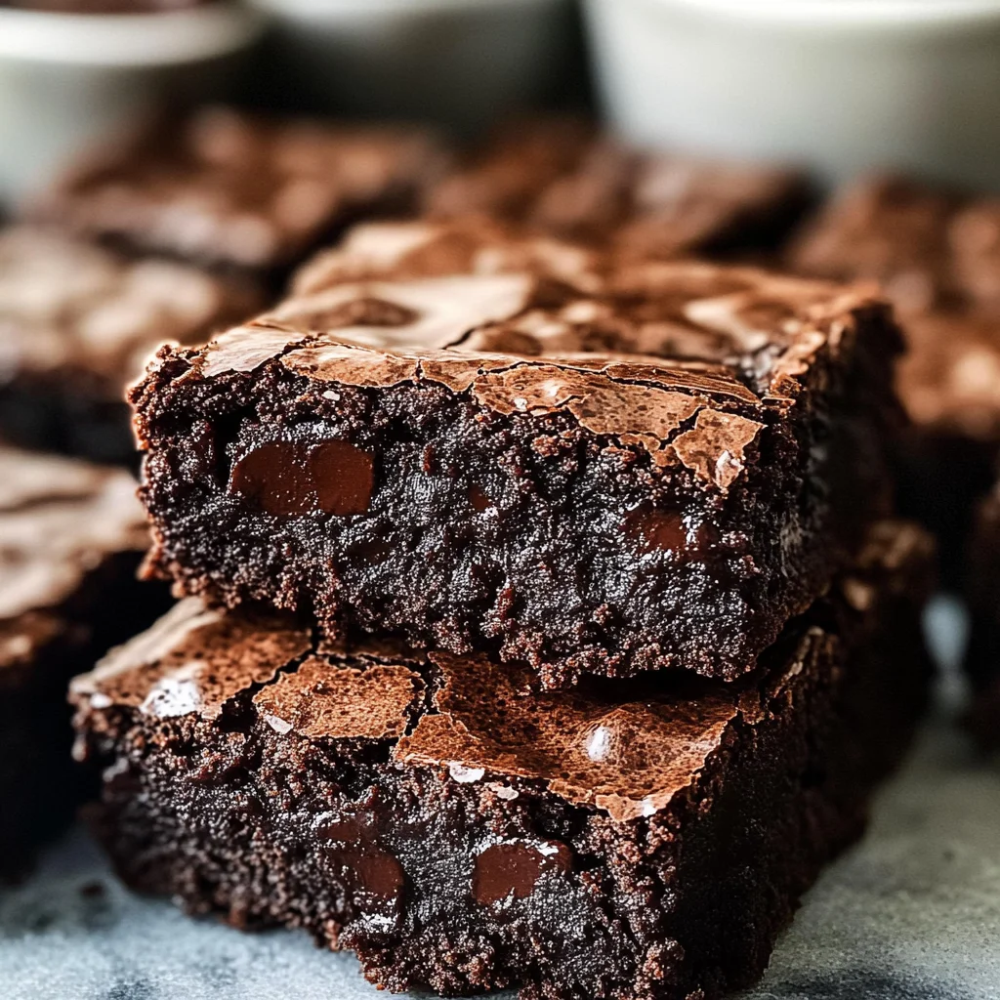
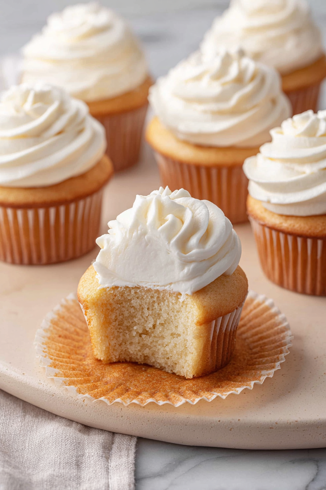

Description:
These healthy cookies are chewy, soft and crispy all at once. In this recipe, no proccessed sugar wil be used. The oat flour used to bake the cookies gives it the soft texture that many people love. In addition, it is very customizalbe and fit for any person. For example, you can add nuts, extra chocolate chips or even replace the milks and oils for diatery restrictions.
Ingredients:
- 1 cup oat flower
- 1/2 tsp baking soda
- 1/4 tsp salt
- 4 tbsp coconut sugar or brown sugar
- 4 tbsp of healthy sugar of your choice: brown, coconut, cane
- 1/3 cup chocolate chips or more if desired
- 1/3 cup chopped nuts (optional)
- 1 tsp pure vanilla extract
- 2 tbsp vegetable or melted coconut oil
- 3-5 tbsp milk of choice, as needed
steps:
- Preheat your oven to 380°F.
- Combine all the dry ingredients in a bowl and mix very well.
- Add the wet ingredients and mix until everything forms a large ball of dough.
- Separate the large ball of dough into smaller cookie-sized balls.
- For softer cookies, refrigerate the dough balls until cold. Otherwise, you can bake them immediately.
- Bake the cookies for approximately 9 minutes
- Remove the cookies from the oven while they are still slightly undercooked.
- Let the cookies cool on the baking tray for 10 minutes before removing them. They will continue cooking as they cool.
- If the cookies haven't spread out, gently flatten them with a spoon.
- Allow the cookies to finish cooling before serving.

Description:
These healthy brownies have the same authentic flavor as regular ones, thats why we love it. Made with maple syrup, it gives you the sweetness of unhealthy brownies with many nutrisious components. Since you blend the ingriedents together, it creates a silky teture that you could taste in the dessert.
Ingredients:
- 1 can black beans
- 3 tbsp unsweetened cocoa powder
- 1/2 cup quick oats
- 1/4 tsp salt
- 1/3 cup pure maple syrup, honey, or agave
- 1 banana
- 1/4 cup nut butter of choice or coconut oil
- 2 tsp pure vanilla extract
- 1/2 tsp baking powder
- 1/2 cup chocolate chips
steps:
- Preheat your oven to 350°F.
- Blend all ingredients except the chocolate chips in a food processor until completely smooth.
- Stir the chocolate chips into the brownie batter.
- Spread the batter evenly into a greased or parchment-lined 8×8-inch baking pan.
- If desired, sprinkle extra chocolate chips on top.
- Bake on the center rack of the oven for approximately 15 minutes.
- Allow the brownies to cool completely before cutting.
- If you prefer firmer brownies, refrigerate them overnight to help them set.

Description:
These healthy vanilla cupcakes are fluffy sweet and lightweight without all the calories. Ingredients including maple syrup and greek yogart give it nutrisious values taht you would not find in the normal dessert. The ingridents are also easy to find. If stored well these cupcakes could last for around 2-weeks. All together, each cupcake is around 149 calories, which is much less the the average one from a baker shop.
Ingredients for cake part:
- All-purpose flour
- Maple syrup
- 4 tbsp unsalted butter
- 3 egg whites
- Vanilla Greek yogurt
- Oat milk
- 2 tsp vanilla extract
- Baking soda
- Baking powder
- Pinch of salt
Ingredients for frosting:
- 6 tbsp room-temperature butter
- Room-temperature coconut cream
- 3 cups powdered sugar
- Vanilla extract
steps for cake part:
- Preheat the oven to 350°F and line a cupcake pan with 12 cupcake liners.
- In a medium bowl, whisk together the flour, baking soda, baking powder, and salt.
- In a separate large bowl, beat the room-temperature butter until smooth.
- Add the maple syrup, egg whites, and vanilla extract. Beat until combined.
- Gradually add the dry ingredients to the wet ingredients and mix until just combined.
- Pour in the oat milk and mix until incorporated.
- Gently fold in the Greek yogurt.
- Divide the batter evenly among the cupcake liners, filling each about two-thirds full.
- Bake for 15-20 minutes, or until a toothpick inserted into the center comes out clean.
- Remove from the oven and allow the cupcakes to cool completely.
- Once cooled, decorate with your homemade vanilla buttercream frosting.
steps for frosting:
- Allow the butter and coconut cream to reach room temperature.
- Beat the butter in a large bowl until smooth and creamy.
- Add the coconut cream and mix until combined.
- Gradually add the powdered sugar, mixing on low speed.
- Add the vanilla extract and continue mixing.
- stur everything together until the frosting is smooth, creamy, and fluffy.
- Spread or pipe the frosting onto your completely cooled cupcakes.